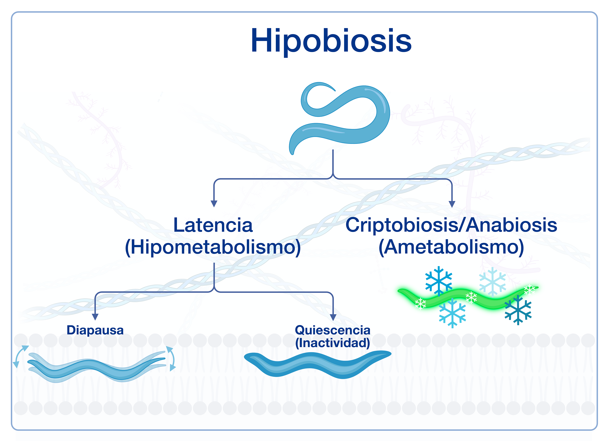

×
Vlaar LE, Bertran A, Rahimi M, Dong L, Kammenga JE, Helder J,
et al.
On the role of dauer in the adaptation of nematodes to a parasitic lifestyle. Parasites Vectors
.
2021;14:1–20.
doi.org/10.1186/s13071-021-04953-6.
Figura 18

Tipos de hipobiosis del nematodo.
Modificado de Vlaar et al.
(6)